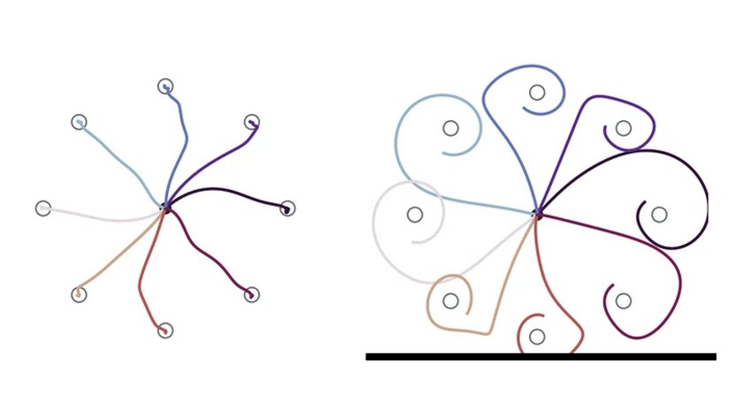
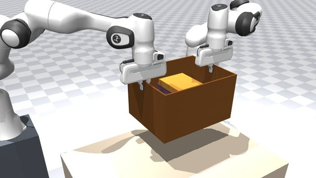

Projects
Shorter studies, from how the motor cortex adapts to how hard two arms should grip.

A Neural Network Motor Cortex That Adapts Like People Do Ongoing project A recurrent network adapts to a force field the way people do: first by learning, on a model human arm, then from memory alone, with frozen weights, on a real Franka Panda. Read more →
How Hard to Hold It: Two Robot Arms and Everyday Objects Project Two robot arms carry a laptop, a chair, a box of books and more without being told how heavy or fragile each one is, and learn how hard to grip from what they feel. Read more →